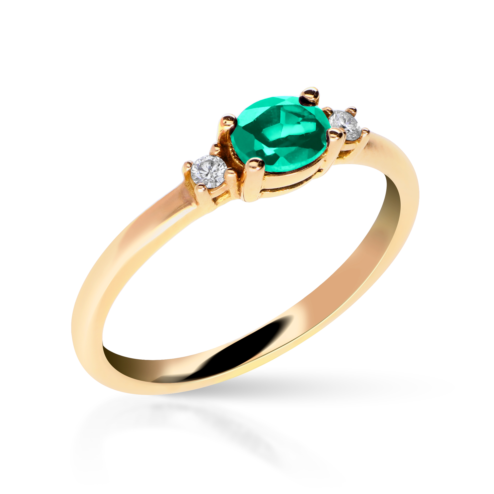

Anillo de Esmeralda
Este impresionante anillo de esmeralda es una verdadera obra de arte. Con una piedra de esmeralda ovalada y rodeada de diamantes, este anillo captura la luz de una manera sorprendente y es una adición elegante a cualquier colección de joyas. Hecho de oro amarillo de 18 quilates, este anillo es de alta calidad y está diseñado para durar toda la vida.
En Joyería Vera, nos enorgullece ofrecer joyas de alta calidad con diseños únicos, y este anillo de esmeralda no es una excepción. ¡Ordene el suyo hoy!
Precio: 430,00€